Lumen Book App
Case Study
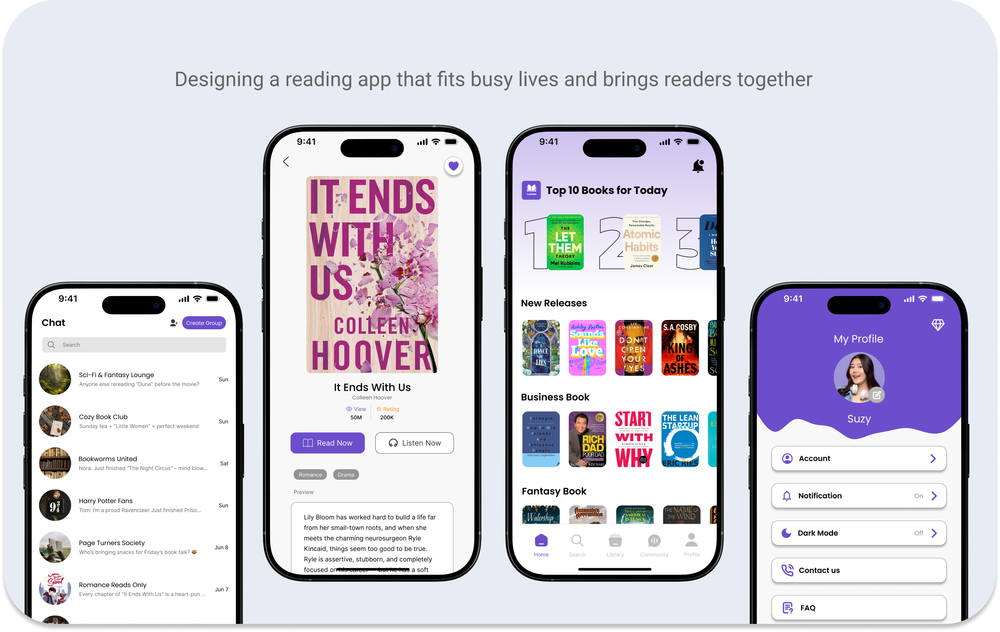

✨ Overview
ROLE
UX/UI Designer
PLATFORM
Mobile app [iOS / Android]
Timeline
2025
TOOLS
Figma
DELIVERABLES
Information Architecture, User Flow, Low-Fidelity Wireframes, Design System, High-Fidelity UI, Interactive Prototype
OVERVIEW
Many readers want to read more but can’t find the time, myself and my friends included. I designed Lumen, a book app that fits reading into everyday life by combining a searchable library, audiobooks with synced subtitles, and group chats for discussing books. Whether commuting, winding down at night, or squeezing in a chapter between tasks, readers can enjoy their next story anytime, anywhere.
I chose the name Lumen, meaning “light” in Latin, because I wanted the app to make reading feel accessible, bright, and easy to enjoy anytime.
✨ Highlights
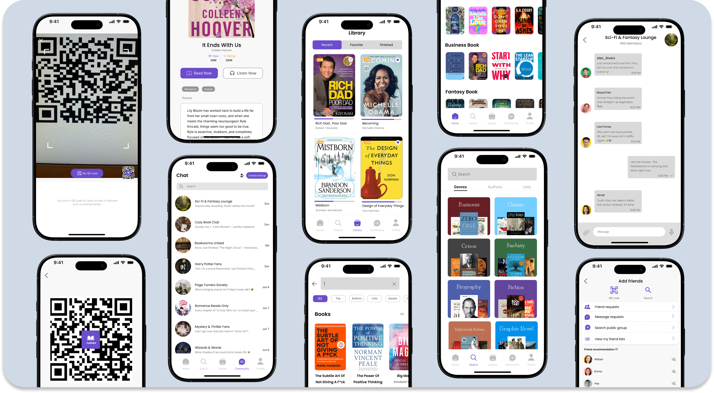
Lumen User Interface
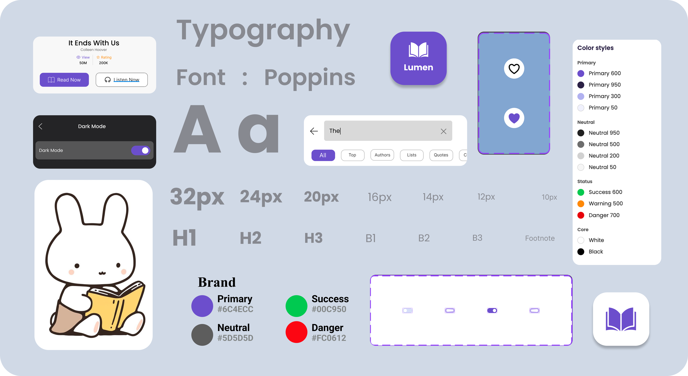
Lumen Design System
✨ The Challenge
Problem Framing
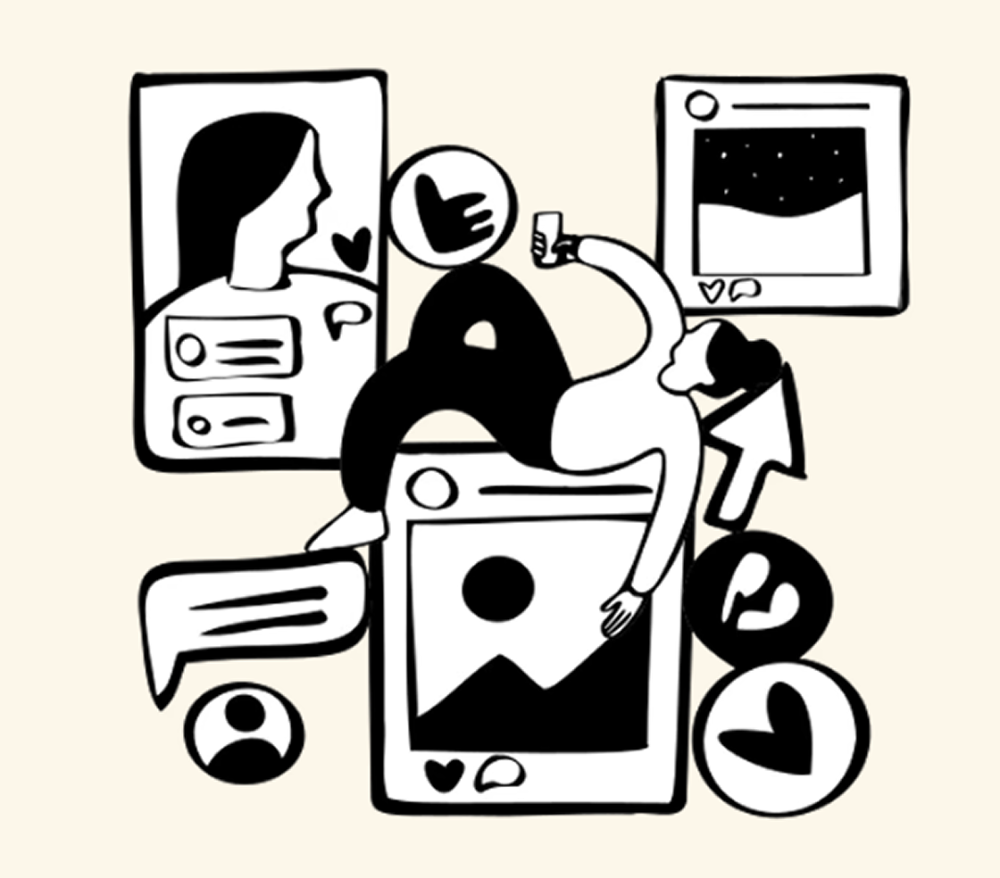
Many readers want to read more but struggle to make it a habit. Busy schedules leave little room to sit down with a book, and most reading apps offer only one way to read, few ways to personalize the experience, and no real place to talk about what you’re reading. Reading ends up feeling like a solo task you have to schedule, rather than something that fits into your day.
Existing apps usually solve one piece at a time. Readers end up switching between a library app, an audiobook app, and a messaging app just to read, listen, and discuss the same book. There’s a clear gap for one flexible, welcoming app where you can read or listen depending on your day, and share the experience with a community of fellow readers. Lumen is designed to fill it.
Pinpointing Issues
Inconsistent Habits: Readers struggle to stay on track with their reading goals
Limited Time: Busy schedules leave little room to sit down with a book
Rigid Formats: Most apps support either reading or listening, not both
Fragmented Experiences: Readers switch between separate apps to read, listen, and discuss the same book
Low Personalization: Book discovery doesn’t feel tailored to each reader
Missing Community: It’s hard to connect with readers who love the same books
✨ The Solution
Our Goals
Our solution is a book app that seamlessly brings reading, listening, and community together in one place. Lumen creates a flexible digital space where readers can:
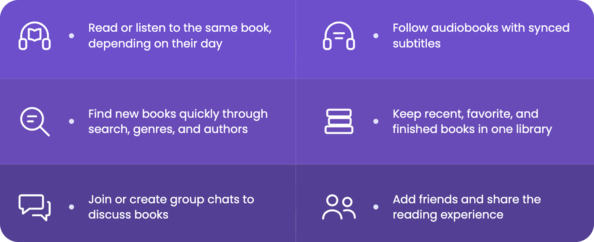
All wrapped in a clean, intuitive interface that makes reading simple and accessible.
High Level Goals
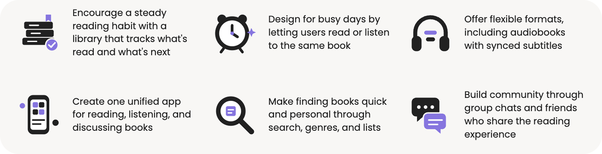
Target Audience
Busy readers, curious minds, and community seekers, from casual listeners to dedicated bibliophiles.
✨Research Summary
Market Insights & Competitor Analysis
I analyzed popular book apps to see how readers currently read, listen, and connect. I looked at apps for reading, audiobooks, and book communities, since Lumen combines all three.
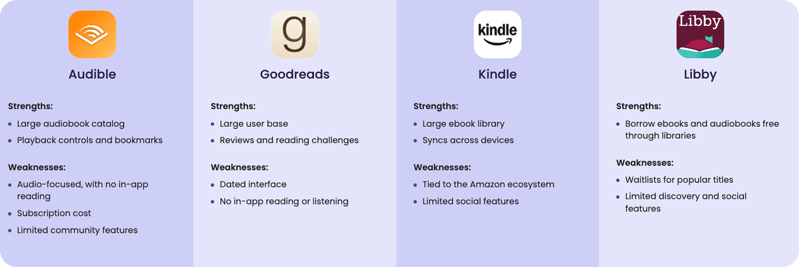
This analysis showed that no single app combines reading, listening, and community well. It left room for Lumen to bring these together in one simple experience.
✨Information Architecture
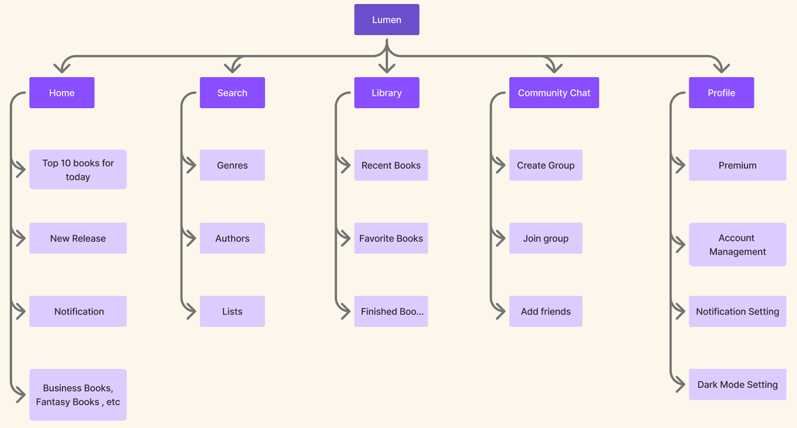
✨User Flow
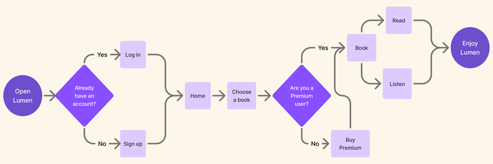
✨Ideation
The ideation process began with defining Lumen’s core features and target users. I focused on balancing the app’s three sides: reading, listening, and community. Key considerations included:
How to let readers switch between reading and listening to the same book without losing their place
How to make audiobooks easier to follow, using synced subtitles
How to make finding books quick through search, genres, and authors
How to keep the library clear and simple, with Recent, Favorites, and Finished lists
How to build community through group chats and friends without overwhelming the reader
✨Wireframing
I created low-fidelity wireframes for the main screens (Home, Search, Library, Community Chat, and Profile) to plan the layout and navigation before starting the visual design:
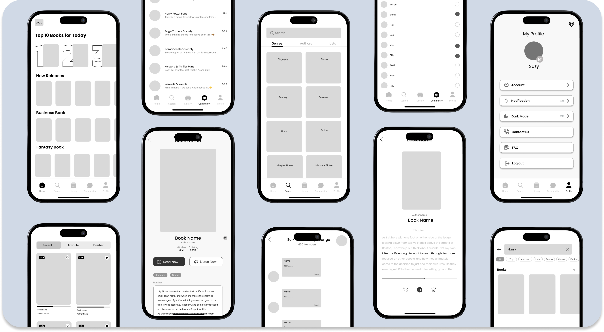
These wireframes helped me settle the structure of each screen and how users move between them, giving me a solid foundation for the UI design.
✨Key Features
Home Page
The Home section shows readers what to read next, with:
🌱 Top 10 books of the day to see what’s trending
🌱 New Releases for readers looking for something fresh
🌱 Quick access to Search, Library, Community, and Profile

Search

The Search section helps readers find their next book quickly:
🌱 Browse by genre, from Fantasy to Crime to Historical Fiction
🌱 Author lists to explore more from writers you love
🌱 Ratings on each book to compare at a glance
Read or Listen
Every book in Lumen can be enjoyed in two ways:
🌱 Read Now and Listen Now buttons on every book page
🌱 Audiobooks with synced subtitles, so you can follow along
🌱 Book details at a glance, including genre, rating, and a preview
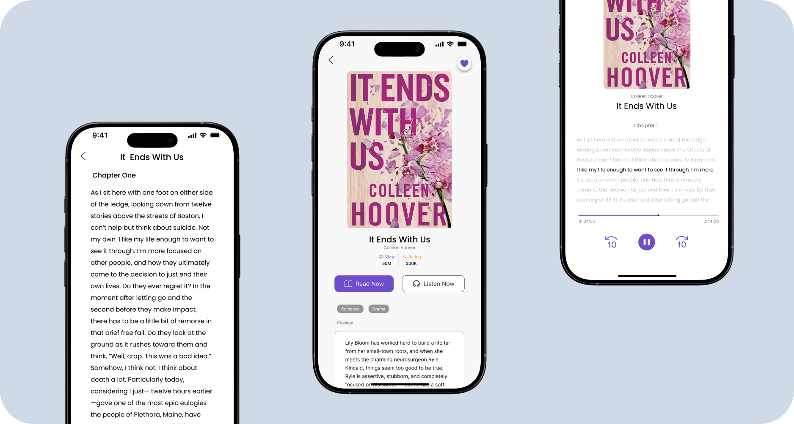
Community Chat
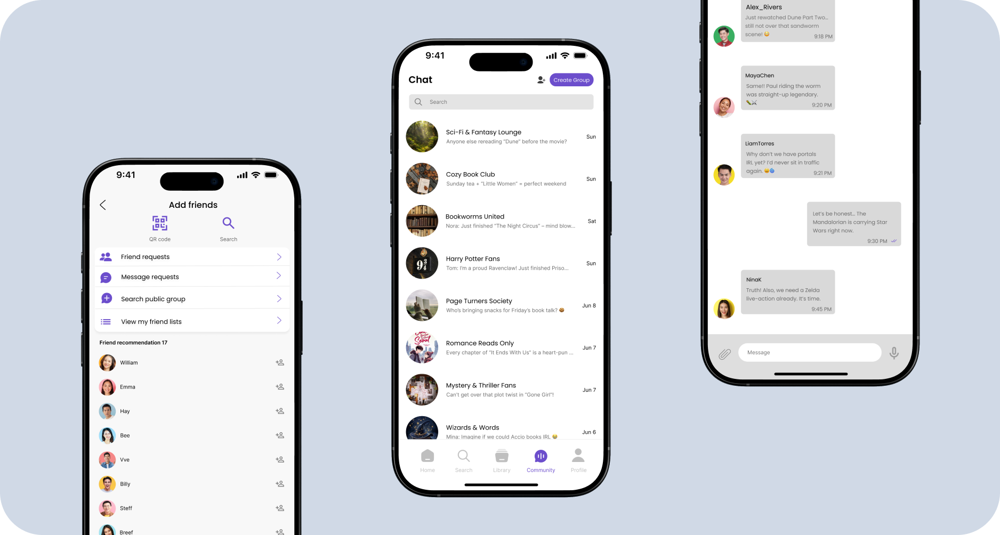
The Community section turns reading into something social:
🌱 Join groups for genres and fandoms, like Sci-Fi & Fantasy Lounge
🌱 Create your own group for your favorite books
🌱 Add friends to share the reading experience
Profile
The Profile section keeps the app personal and simple:
🌱 Account and notification settings
🌱 Dark mode for comfortable reading at night
🌱 Contact us and FAQ for help

✨Dark Mode
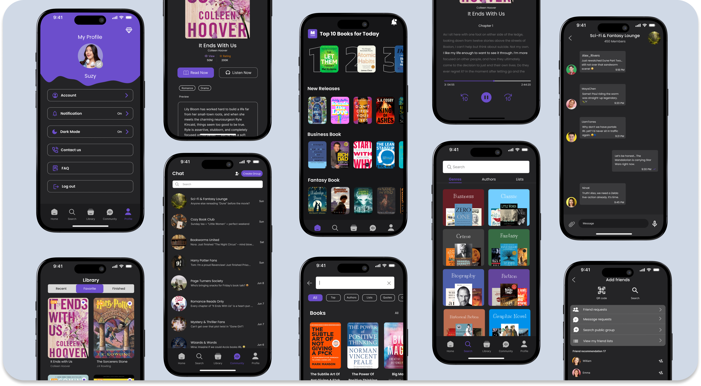
✨ Reflections
Key Takeaways

Flexibility is essential: Designing one app for reading, listening, and community means every feature has to work for readers with very different routines.

Community should feel welcoming: Group chats and friends add value only when they’re easy to join and never overwhelm the reader.

A cohesive design system: Defining colors, typography, and light and dark mode early made every screen faster to design and more consistent.

Competitive analysis insights: Seeing what Audible, Goodreads, Kindle, and Libby do well and poorly showed the gap Lumen fills.

Two modes, one experience: Letting readers switch between reading and listening only works if the flow stays simple and the same book feels familiar in both.

Simplicity wins: Even with many possible features, keeping the core experience clear mattered more than adding more.
Next Steps
My immediate next steps include:
🌱 Running usability tests on the prototype with a small group of readers
🌱 Refining the experience based on their feedback
🌱 Adding empty states and onboarding illustrations
🌱 Expanding personalization and book recommendations
🌱 Building a roadmap for future features
Looking further ahead, I’d like to grow the community features and explore more ways for readers to make Lumen feel like their own space.
Thank you for checking out this project! ❤️